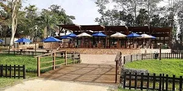
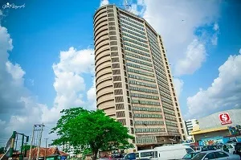

Visitor Info
Nationality
Nigeria Key National Information
- Population: Approximately 225 million
- Land Mass: Approximately 923,769 square kilometer
- Unemployment rate: 30%
- Number of States: 37 including FCT
City

Ibadan City
Ibadan is the capital city of Oyo State, Nigeria, and one of the largest cities in Africa by land area. Historically, it was a key city in the Yoruba Empire and became an important center for administration during British colonial rule.

Agodi Gardens Ibadan
Bowers Tower Ibadan
